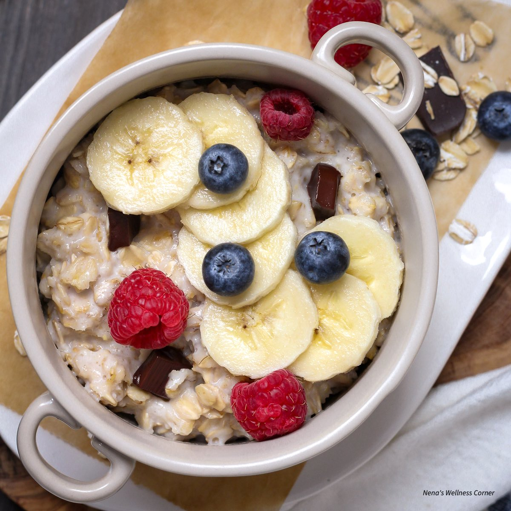

Breakfast Recipes
Breakfast is the most important meal of the day, so make sure to eat it!
Click the item to see the detailed recipe
Fast Sandwich recipe
Ingredients:
- Burger Buns (or literally any bread)
- Two slices of deli meat of your choice
- Two eggs
- Two slices of cheese of your choice
Recipe:
- Whisk your eggs together until combined and season with salt.
- Place your pan over medium heat, put the deli meat of choice onto pan and sear for 1-2 minutes.
- Once deli meat is cooked remove them and add your eggs and stir to break the forming curd.
- Once the egg begins to set place a slice of cheese in the center. Fold the sides of the egg in to form a square that the slice of cheese is in.
- Take the cooked egg out and toast your bread with butter.
- After you toast the bread assemble your sandwich and place the last slice of cheese in the sandwich, then enjoy.
French Toast

Ingredients:
- ½ A loaf of bread
- White sugar
- Ground cinnamon
- Black pepper
- Two eggs
- Milk
- Butter
Recipe:
- Cut your bread into one inch batons.
- In a bowl mix together sugar, 2 tsp cinnamon, and ground black pepper.
- In a separate bowl mix together eggs, sugar, and 1 and a half tsp of cinnamon until combined, then add milk and mix.
- Heat a pan over medium-high heat. Add a slab of butter to the pan while it's heating.
- Soak your bread sticks in the egg mixture and add to the hot pan.
- Cook all sides for about one minute each or until golden brown.
- After the sticks are cooked toss them in the cinnamon sugar and enjoy.
Oat meal

Ingredients:
- 1/2 cup oats (rolled or quick-cooking)
- 1 cup liquid (water, milk, or a mix of both)
- A pinch of salt (optional, enhances flavor)
- Sweeteners of your choice(honey, maple syrup, or brown sugar)
- Toppings of your choice(bananas, berries, apples, or dried fruit)
Recipe:
- In a small saucepan, mix the oats, liquid, and a pinch of salt (if using).
- Bring the mixture to a boil, reduce to a simmer, and cook until thickened, you need to stir occasionally
- Stir in sweeteners
- Mix in your toppings and dig in while it’s warm and creamy.